Chefes
Em Undertale, sua jornada é marcada pelos principais chefes que aparecem conforme você segue uma das três rotas possíveis: Pacifista, Neutra ou Genocida. Logo no começo, você encontra Toriel, que abre caminho para os primeiros desafios. Depois, os irmãos Sans e Papyrus surgem em sua trajetória, seguidos por Undyne, que marca a entrada numa parte mais intensa da aventura. Mais à frente, Mettaton assume o papel de destaque como chefe da área tecnológica, até que você finalmente chega a Asgore, o rei dos monstros.
Dependendo das escolhas que você faz — poupar, lutar ou eliminar tudo em seu caminho — esses encontros mudam de forma significativa. Na rota Pacifista, os chefes aparecem como obstáculos que podem ser vencidos sem violência. Na rota Neutra, seus atos criam diferentes variações dessas batalhas e desfechos. Já na rota Genocida, os mesmos chefes se transformam em confrontos muito mais sombrios e difíceis, refletindo a destruição deixada pelo jogador.
Assim, cada boss e cada rota constroem uma experiência diferente, fazendo com que Undertale mude completamente conforme suas decisões ao longo da aventura.
A luta contra a Toriel em Undertale acontece nas Ruínas e é o primeiro grande confronto do jogo. Ela tenta impedir que você deixe o subsolo, acreditando que o mundo lá fora é perigoso demais. Durante a batalha, Toriel evita ao máximo te atingir de verdade, e seus ataques começam a desviar do jogador conforme a luta avança.
O momento é emocional porque Toriel não luta por maldade, mas por medo de perder alguém novamente. Dependendo das suas escolhas — atacar ou poupar — a cena pode terminar de maneiras diferentes, refletindo o tom que sua jornada seguirá dali em diante.
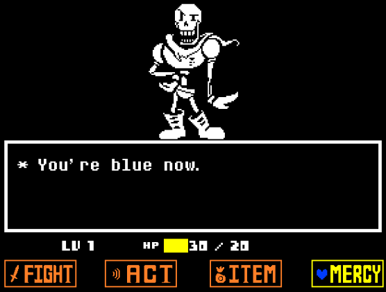
A luta contra o Papyrus acontece em Snowdin e é muito mais cômica do que ameaçadora. Papyrus, determinado a capturar um humano para impressionar a Guarda Real, enfrenta você cheio de entusiasmo e dramaticidade. Seus ataques são simples, parecendo mais brincadeiras do que tentativas reais de machucar.
Durante a batalha, Papyrus demonstra curiosidade e até carinho pelo jogador, oferecendo até mesmo a opção de ir para um “encontro” após a luta. No fim, independentemente de você atacá-lo ou poupá-lo, ele revela que não deseja realmente ferir ninguém. A luta serve como um momento leve e divertido, mostrando a personalidade inocente e sonhadora do esqueleto.
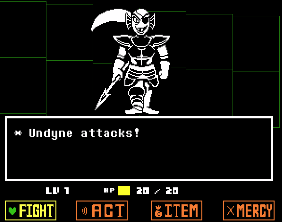
Na rota pacifista ou neutra sem matar monstros, você enfrenta a Undyne em Waterfall. Ela é a chefe da Guarda Real e acredita firmemente que capturar você é a única forma de proteger todos os monstros. Por isso, ela luta com convicção e velocidade, usando lanças verdes e amarelas para testar seus reflexos.
Durante a batalha, Undyne fica cada vez mais impressionada com sua resistência. A luta é tensa, com músicas e movimentos rápidos, refletindo sua determinação de cumprir o dever. No entanto, quando percebe que você não quer machucar ninguém e insiste em poupar, ela começa a hesitar.
Para escapar dela, você precisa correr, repetindo tentativas até que ela fique exausta. No fim, Undyne desmaia por causa do calor, e você pode ajudá-la oferecendo água — um gesto que muda completamente sua opinião sobre você.
Esse momento é crucial na rota pacifista, pois marca a transformação de Undyne de uma inimiga implacável para uma futura aliada, reconhecendo seu coração pacífico.
A luta contra Mettaton na rota neutra/pacifista é um dos momentos mais estilizados e teatrais de Undertale. Mettaton, um robô-estrela criado para entreter, transforma o confronto em um verdadeiro espetáculo.
Primeiro, ele tenta “testar” você com desafios e minigames, sempre exagerando no drama e nas poses. Quando a luta principal acontece, Mettaton EX entra em cena, revelando sua forma de estrela pop. A batalha vira quase um show musical, com ataques que lembram coreografias e luzes de palco.
Durante o combate, você precisa lidar com os ataques ao mesmo tempo em que tenta chamar atenção do público, usando ações como Pose, Boast ou Heel Turn. A luta gira menos em violência e mais em performance.
No final, ao perceber que você não quer lutar e está tentando apenas seguir seu caminho, Mettaton começa a mostrar sua verdadeira insegurança — o desejo de ser amado, reconhecido e fazer os outros felizes. O confronto termina com uma despedida emocional, revelando o lado mais humano por trás de sua atitude extravagante.
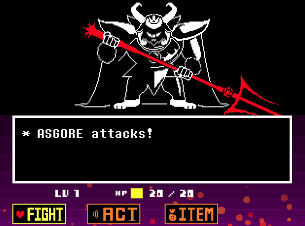
A luta contra Asgore na rota neutra/pacifista é um dos momentos mais fortes e tristes de Undertale. Asgore é o rei dos monstros, e apesar de ser gentil e bondoso, ele acredita que precisa lutar contra você para libertar seu povo do subsolo.
Assim que o combate começa, ele destrói o botão de Mercy, deixando claro que não há como poupá-lo diretamente naquele momento. A batalha é intensa, com ataques de fogo e golpes poderosos, mostrando que Asgore está decidido a cumprir seu dever — mesmo que isso o machuque emocionalmente.
Durante toda a luta, fica evidente que ele não quer te ferir por crueldade, mas porque sente que não há outra escolha. É um confronto carregado de tristeza e responsabilidade.
Ao final, quando Asgore está enfraquecido, o jogo te dá a decisão mais importante: poupá-lo ou finalizá-lo. A forma como você age aqui influencia profundamente os rumos e mensagens da história, marcando essa luta como uma das mais emocionais de todo o jogo.
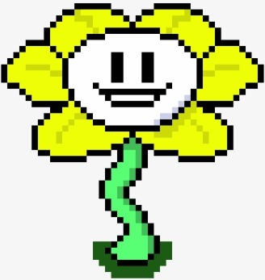
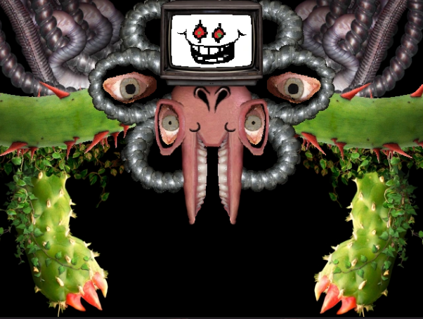
A luta contra Omega Flowey (ou Photoshop Flowey) na rota neutra é um dos momentos mais chocantes e caóticos de Undertale.
Depois de você derrotar Asgore, Flowey revela sua verdadeira natureza e toma para si as seis almas humanas, transformando-se em uma criatura grotesca e completamente distorcida. Nesse estado, ele quebra todas as regras do jogo: muda a interface, distorce gráficos, traz elementos realistas e até mexe nos arquivos de salvamento.
A batalha se torna um caos total — ataques imprevisíveis, telas piscando, sons distorcidos e fases delirantes, cada uma representando uma das almas humanas. No entanto, conforme você avança, as almas começam a resistir dentro de Flowey e ajudam você, enfraquecendo-o pouco a pouco.
Ao final, quando Flowey não tem mais forças, o jogo te dá a opção de poupá-lo. Esse momento determina o tom da rota neutra e o futuro dele na história. É uma luta marcante porque transforma completamente a estrutura do jogo, mostrando o quão poderoso e cruel Flowey pode ser quando tem controle total.
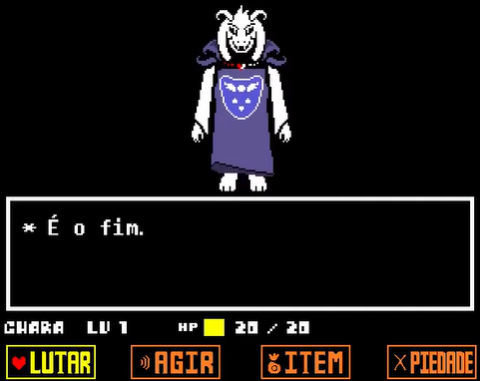
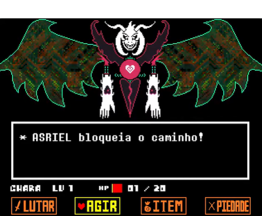
A luta contra Asriel Dreemurr na rota pacifista verdadeira é o clímax emocional de Undertale. Ela não é apenas um confronto físico, mas um reencontro carregado de memórias, perda e esperança.
Quando Asriel assume sua forma final — o Anjo da Morte — ele usa um poder quase ilimitado obtido das almas humanas e das almas dos monstros. A batalha se transforma em algo grandioso, com ataques gigantes, explosões de luz e mudanças drásticas no cenário.
Aqui, você não consegue morrer de verdade: a luta sempre te mantém vivo, simbolizando a força da determinação.
Ao longo do combate, Asriel tenta te convencer de que tudo é inútil e que nada importa. Mas, pouco a pouco, você consegue alcançar as almas presas dentro dele — as de seus amigos. Uma a uma, você as “chama de volta”, mostrando que os laços criados durante a jornada foram reais e poderosos.
No final, o confronto deixa de ser uma luta e vira um momento de verdade. Asriel volta à sua forma infantil e admite seu medo e solidão. Você o conforta, e ele finalmente aceita deixar você e todos os outros seguirem em frente.
É um dos momentos mais emocionantes do jogo, encerrando a rota pacifista com a mensagem de que empatia e conexão podem quebrar até o ciclo mais profundo de sofrimento.
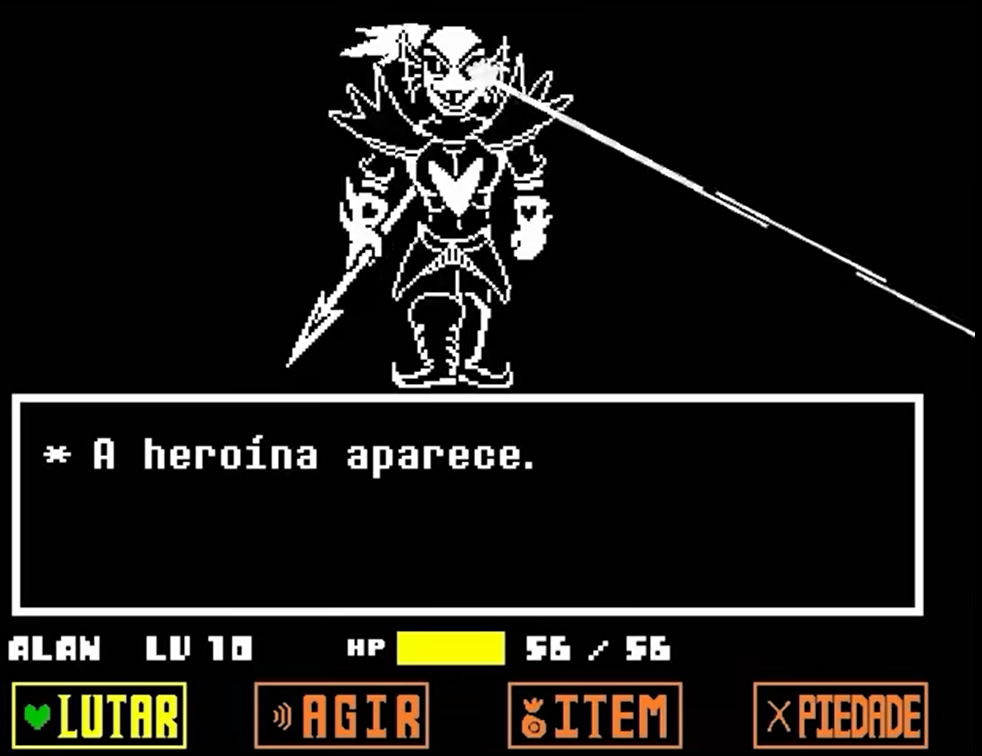
A luta contra Undyne Imortal acontece exclusivamente na rota genocida e é um dos confrontos mais difíceis e impactantes de Undertale.
Quando você segue o caminho da destruição e elimina todos os monstros em sua área, Undyne percebe o massacre e desperta toda a sua determinação. No momento em que deveria cair, ela se recusa a morrer — seu corpo literalmente se recompõe — e ela assume sua forma imortal, com uma armadura muito mais poderosa e uma aura de pura força de vontade.
A batalha contra Undyne Imortal é extremamente rápida, agressiva e cheia de ataques devastadores, exigindo reflexos precisos. As lanças são lançadas em grande quantidade e velocidade, e o ritmo da luta é muito mais frenético do que sua versão normal.
A música, Battle Against a True Hero, reforça o peso moral do combate: você não está enfrentando apenas uma chefe, mas alguém lutando desesperadamente para salvar seu povo de um destino cruel.
Undyne luta não por glória, mas porque é a última esperança dos monstros.
Ela se levanta contra você sabendo que pode não vencer, mas determinada a impedir que o mundo dela seja destruído, mesmo que isso custe sua própria vida.
A luta termina apenas quando sua força finalmente se esgota — um momento trágico que marca ainda mais o impacto da rota genocida.
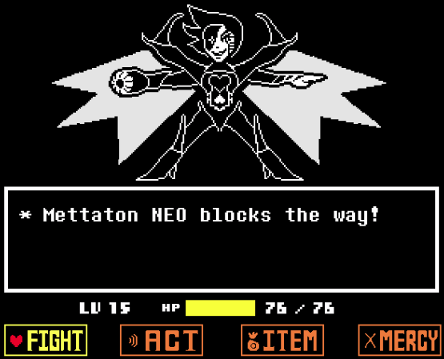
A luta contra Mettaton NEO acontece somente na rota genocida e é, de propósito, uma das batalhas mais anticlímax de Undertale.
Depois de enfrentar Undyne Imortal, você chega a Fazer uma batalha grandiosa contra Mettaton, que aparece em sua nova forma “NEO”: uma armadura futurista, com asas, lâminas de energia e visual de “chefe final”. Ele faz um discurso dramático, preparado para lutar até o fim e salvar o público que o admira.
Mas, na rota genocida, tudo é diferente.
Assim que a luta começa, você pode atacá-lo imediatamente — e ele cai com um único golpe.
Não há batalha real, não há ataques para desviar, não há resistência. Mettaton NEO foi criado apenas para mostrar o quão cruel e implacável a rota genocida é: não importa a forma, a força ou o discurso, nada sobrevive ao jogador nessa rota.
A cena termina com ele sendo derrotado instantaneamente, deixando um vazio incômodo e reforçando o impacto emocional dessa rota: até personagens carismáticos e poderosos são reduzidos a nada diante da sua violência.
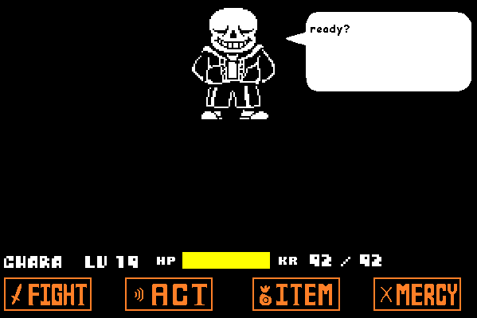
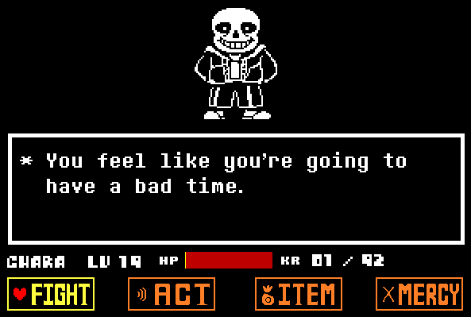
A luta contra Sans na rota genocida é considerada a mais difícil e emocionalmente pesada de Undertale. Ela representa o julgamento final por tudo o que você fez até ali.
Quando você chega até ele, Sans não fala como um personagem cômico. Ele sabe exatamente o que você fez e não tenta te enganar: diz, com calma, que vai lutar com tudo que tem para impedir que você avance.
E é exatamente isso que acontece.
Assim que a batalha começa, Sans ataca antes mesmo do combate iniciar, quebrando as regras do jogo. Ele usa movimentos imprevisíveis, ataques contínuos e golpes com dano “karma”, que continuam tirando sua vida mesmo após o impacto. Sua luta é marcada por:
- Ataques rápidos que exigem precisão extrema,
- Padrões que mudam constantemente,
- Longas sequências sem descanso.
A música Megalovania reforça a tensão e o peso dessa batalha.
Sans não é forte — ele admite isso — mas sua verdadeira arma é que ele nunca deixa você ter um turno de verdade. Ele esquiva de todos os seus ataques, atrasando ao máximo a sua progressão. Ele luta apenas porque sabe que, se desistir, todos os monstros serão mortos.
No final, quando Sans está exausto e parece cair no sono, o jogo te dá o último golpe obrigatório.
A luta termina de maneira amarga: Sans dá seu último sorriso e desaparece, simbolizando a derrota final da resistência monstruosa diante da rota genocida.
É um dos momentos mais marcantes e pesados do jogo, pois mostra o preço moral do caminho que o jogador escolheu.
Depois disso, acha que conseguelidar com esses esqueleto preguiçoso? Cliqueaqui